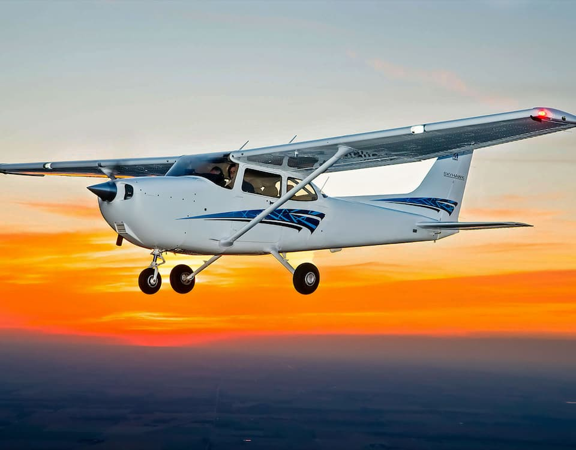
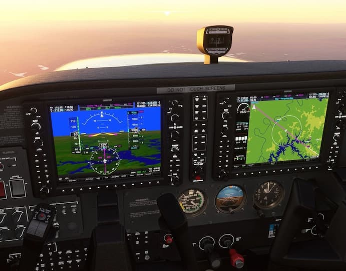
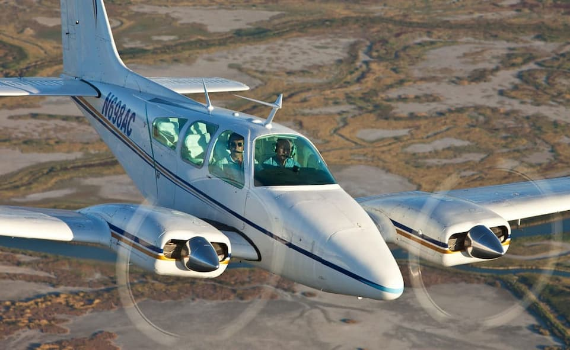
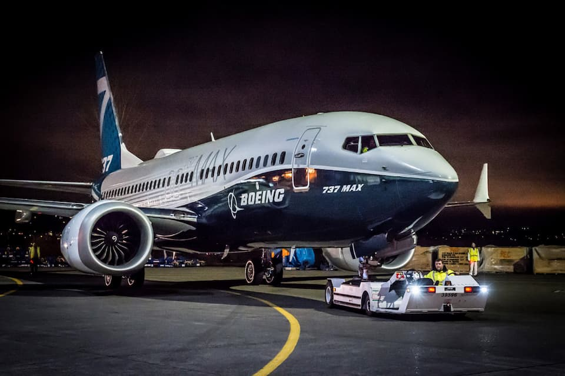

Обучаются: 181
Выпустились: 12
Добро пожаловать в Учебно-Тренировочный центр подготовки пилотов русскоязычного дивизиона VATRUS!
Как начать обучение?Наш учебный центр занимается обучением виртуальных пилотов русскоязычного дивизиона ВАТРУС, с последующей аттестацией и присвоением рейтинга пилота VATSIM соответствующего уровня. Центр подготовки пилотов основан исключительно на добровольных началах. Наши инструктора - искренние приверженцы своего дела, любящие небо всей душой, и желающие поделиться своими знаниями.
Вследствие бурного развития компьютерной техники и программного обеспечения, авиасимуляторы стали более доступны широкому кругу пользователей, а различные онлайн сообщества растут подобно грибам после дождя. Соответственно увеличилось число желающих вступить в сеть VATSIM. К сожалению не все вполне осознают, нужно ли им это. VATSIM является достаточно обособленным сообществом со своими правилами и устоями. Постараемся ответить на основные вопросы о сети и помочь тебе принять верное решение: нужен ли тебе VATSIM, и, что более важно, нужен ли ты VATSIM'у.
Прежде всего, хотелось бы остановиться на главных принципах сети VATSIM, которые записаны в его основополагающем документе: Code of Conduct.
...One of the main goals of VATSIM is to create an environment which is fun and, at the same time, educational and a realistic simulation of procedures followed by pilots and air traffic controllers everyday around the world...
...Одной из основных целей VATSIM является создание среды, которая в развлекательной и в то же время познавательной и реалистичной форме имитирует процедуры, которым ежедневно следуют пилоты и авиадиспетчеры по всему миру...
Другими словами, если тебя интересует развлекательная составляющая без привязки к пресловутому реализму - VATSIM не для тебя. Если тебе хочется "полетать с другими" не имея намерения "заморачиваться" изучением и соблюдением реальных правил и процедур - значит для большинства участников сети ты превращаешь любимое хобби из развлечения в нелёгкий труд по обслуживанию твоих "полётов", и, наконец, своими действиями ты уничтожаешь ту самую реалистичную среду.
Конечно, никто не идеален. Первым пунктом в правилах сети VATSIM (General Rules of Conduct А1) указано:
Account holders shall, at all times, be courteous and respectful to one another.
Все члены сети должны быть вежливы и уважительными друг к другу.
Поэтому, если ты не имеешь соответствующих знаний, но имеешь желание их приобрести - ты обратился по адресу. Как мы уже упоминали, наш учебный центр занимается обучением виртуальных пилотов русскоязычного дивизиона ВАТРУС, с последующей аттестацией и присвоением рейтинга пилота VATSIM соответствующего уровня. Стоит понимать, что в сети VATSIM рейтинг пилота не даёт тебе абсолютно никаких привилегий. Напротив, это определенная ответственность.
Итак, если у тебя есть желание пройти обучение в нашем центре подготовки пилотов, заполняй заявку. С тобой свяжется один из наших инструкторов, и после короткого собеседования, в случае положительного результата, ты будешь зачислен для прохождения обучения.
Обучение на получение рейтинга пилота VATSIM Р1 (PPL - Private pilot licence). Курс является базовым для всех пилотов. В процессе обучения курсант получает основные знания по аэродинамике, аэронавигации, правилам выполнения полётов и авиационной метеорологии. В практической части обучения курсант приобретаем навыки необходимые для выполнения полётов в простых метеоуловиях по правилам визуальных полетов (ПВП) на легком одномоторном самолёте, оборудованном одним поршневым двигателем и взлётной массой до 5700кг.
Обучение на получение рейтинга пилота VATSIM Р2 (IR - Instrument rating). Курс разработан для пилотов, имеющих рейтинг Р1 и желающих повысить свою квалификацию для выполнения полетов по правилам полетов по приборам (ППП), в том числе в инструментальных метеорологических условиях, при полном или частичном отсутсвии видимости земли. В процессе обучения курсант получит основные знания о принципах полетов по приборам с использованием радиотехнических средств навигации. Выполнит ряд практических заданий по управлению воздушным судном днём и ночью в различных метеоусловиях.
Обучение на получение рейтинга пилота VATSIM Р3 (CMEL - Commercial Multi-Engine Licence) Курс разработан для дальнейшего повышения квалификации пилота. На данном курсе пилот осваивает теоретические основы и прибретает практические навыки управления многодвигательным самолетом с массой до 5700кг, в различных условиях. В курс включена подготовка по профилю "коммерческий пилот" где курсант обучается действовать в качестве командира воздушного судна (капитана) и перевозить людей или грузы.
Обучение на получение рейтинга пилота VATSIM Р4 (ATPL - Airline Transport Pilot License). Этот курс посвящен обучению теории и практике эксплуатации турбовинтовых или турбореактивных самолетов как коммерческого воздушного транспорта. В процессе обучения курсанты приобретают знания и практические навыки, необходимые для выполнения международных коммерческих рейсов на авиалайнерах в качестве командира воздушного судна.
Обучаются: 181
Выпустились: 12
Обучаются: 10
Выпустились: 5
Обучаются: 0
Выпустились: 0
Обучаются: 0
Выпустились: 0
Программа подготовки летного состава (ППЛС ВАТРУС) Flight crew training program
Рейтинг ближе, чем кажется!
Заполнить заявку